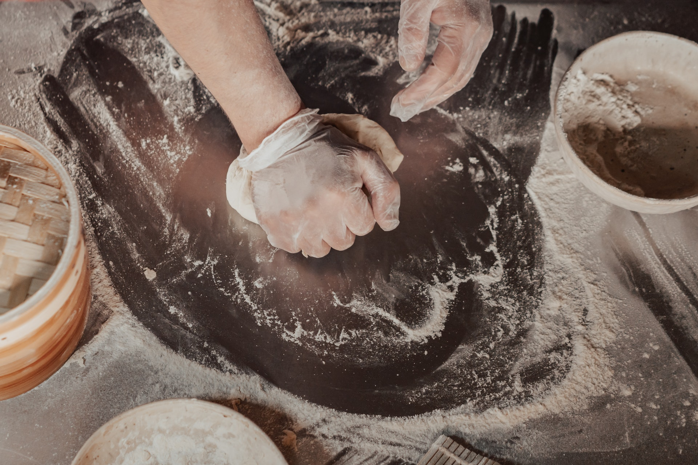

<!DOCTYPE html>
<html lang="en">
  <head>
    <meta charset="UTF-8" />
    <meta http-equiv="X-UA-Compatible" content="IE=edge" />
    <meta name="viewport" content="width=device-width, initial-scale=1.0" />
    <title>Restaurant Page</title>
  </head>
  <body>
    <div id="content">
      <!-- <header>
        <nav>
          <ul>
            <li>Home</li>
            <li>Menu</li>
            <li>Contact</li>
          </ul>
        </nav>
      </header>
      <main>
        <section class="presentation">
          <article>
            <h1>La Margherita Pizzeria</h1>
            <p>
              It was born from the passion and culinary experience of two
              brothers who wanted to combine the pleasure of eating with the
              continuous search for quality and culinary goodness. Through a
              careful and personal selection of raw materials and processing
              techniques, they offer a high quality product, firmly believing in
              the manual skills of their work, following and knowing in depth
              the supply chain of the individual products used in the
              laboratory. The pleasure of eating well is constantly evolving,
              which is why Frumento collaborates with well-known Chefs in search
              of the best encounter between the flavors of the past and modern
              culinary creativity.
            </p>
            <p>
              Our selection is the result of an accurate analysis of the supply
              chain of each single product, cultivating the interest in
              personally knowing the producers, farms, dairies, breweries, to
              understand their working philosophy closely.
            </p>
          </article>
          <article>
            
          </article>
        </section>
      </main>
      <footer>
        <span class="label-copy"
          >Copyright © Leandro Agustin Fernandez 2022 (The Odin Project)</span
        >
        <a
          href="https://github.com/LeandroAgustinFernandez/restaurant-page-TOP"
          target="_blank"
          class="github"
        >
          <i class="fa-brands fa-github"></i>
        </a>
      </footer> -->
    </div>
    <script src="main.js"></script>
  </body>
</html>
<!-- Foto de Mikhail Nilov: https://www.pexels.com/es-es/foto/manos-harina-masa-guantes-8093360/ -->